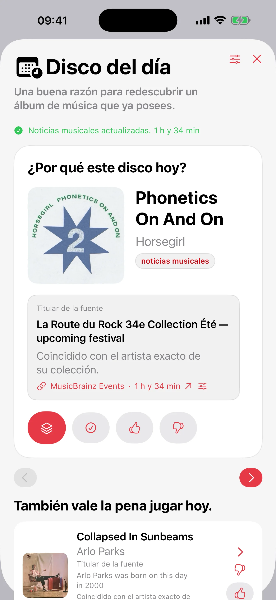

Selección aleatoria personalizable
Elige una selección totalmente aleatoria o un modo ponderado opcional que favorece los discos menos escuchados y aplica después filtros y exclusiones.
Pon el disco adecuado.
Cataloga tus vinilos y CD y elige el próximo disco con una selección aleatoria personalizable, Mood Pick o el Disco del día. Tu colección permanece privada, puede sincronizarse mediante iCloud entre iPhone, iPad y Mac y también está disponible en el Apple Watch.

En desarrollo
Los detalles del lanzamiento se anunciarán cuando ambas versiones estén listas.
🌍 Worldwide applications welcome · Beta available in English and French
Buscamos 12 probadores beta con una cuenta de Google y un teléfono o una tableta Android compatibles. Participa en la prueba cerrada durante 14 días consecutivos, usa la app con regularidad y comparte comentarios sobre errores, interfaz y rendimiento.

Apple · Próximamente
Componga una progresión a partir de álbumes de música que ya posee.


Ya disponible
Llévate toda tu colección contigo.
Record Picker
Record Picker cataloga vinilos, CD y álbumes favoritos, y sugiere el siguiente disco según filtros, favoritos, exclusiones y el ambiente del momento.
 Sees The Light (2012)La Sera
Sees The Light (2012)La SeraElige una selección totalmente aleatoria o un modo ponderado opcional que favorece los discos menos escuchados y aplica después filtros y exclusiones.
Escaneo de códigos, MusicBrainz, alternativa Discogs, portadas propias, duplicados, exclusiones, deseos e historial siguen siendo fáciles de gestionar.
Portada a la izquierda, metadatos completos a la derecha, botón Pick centrado y barra flotante para elegir sin fricción.
Una estrella roja sustituye la pastilla Favorito en la caja: un toque en iPhone o iPad basta para marcar o quitar.
Record Picker no tiene cuenta de usuario, publicidad, venta de datos ni servidor que almacene la colección.


Guías de vinilo
Tres guías concretas responden preguntas habituales de coleccionistas: que escuchar ahora, como usar un sorteo aleatorio útil y como mantener viva una colección.
Guía de vinilo
Una guía practica para elegir que vinilo escuchar a continuación sin quedarse demasiado tiempo mirando la estantería.
Sorteo aleatorio
Por que una app de sorteo de vinilos funciona mejor cuando respeta filtros, favoritos, exclusiones y contexto de escucha.
Colección de vinilos
Una guía practica para catalogar, enriquecer, guardar copias y redescubrir una colección de vinilos con Record Picker.
Para preguntas sobre la app, importación, copias o privacidad, usa el contacto publico de soporte.